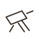

passport
to us
valid for a lifetime
message archive
stargaze
daily note
issued feb 14
valid for a lifetime
daily note
one small note, every day, until we meet.
place
stamp
(date will auto-fill later)
note
notes list (placeholders)
i love how your mind notices details other people miss.
today i’m grateful that i get to love you.
you make hard days feel survivable.
i still get excited when i see your name.
you feel like home, even from far away.
i admire how thoughtful you are.
you make me want to be gentler with the world.
i love the way you explain things.
thinking about you makes my chest feel warm.
you’re my favorite person to talk to.
i love how safe i feel with you.
you make ordinary moments special.
i’m proud of you for getting through today.
your laugh lives in my head rent free.
i love the way you care, even quietly.
you make the future feel real.
i trust you with my heart.
you’re so easy to love.
i like who i am when i’m with you.
you make me feel chosen.
i love how your brain works.
you’re doing better than you think.
i love the way you say my name.
you make me feel understood.
i’m always on your side.
you’re my favorite comfort.
i love how genuine you are.
you make even waiting feel meaningful.
i believe in you deeply.
you’re my soft place to land.
i love how you see the world.
you make me laugh when i least expect it.
i’m so thankful i get to love you.
you’re my favorite part of the day.
i admire your resilience.
you matter so much to me.
i love how caring you are with people you love.
you make distance feel smaller.
i’m proud to call you my partner.
you make my heart feel steady.
i love how thoughtful your messages are.
you make me feel less alone.
i love how you try, even when things are hard.
you’re incredibly important to me.
i love building a future with you.
you make me feel calm.
i trust where we’re going.
you’re worth every mile between us.
i love how kind you are.
you feel like a gift.
i love how open you are with me.
you make me feel emotionally safe.
i’m grateful for your patience.
you make my life brighter.
i love how deeply you feel.
you’re my favorite notification.
i love growing with you.
you make me feel grounded.
i love how honest you are.
you make love feel simple.
i love how supportive you are.
you make me feel seen.
i admire your strength.
you’re my favorite constant.
i love the way you think things through.
you make my heart feel full.
i’m lucky to love you.
you make me feel brave.
i love how gentle you can be.
you make my days better.
i love the way you care about things.
you’re my safe person.
i love imagining a life with you.
you make waiting worth it.
i trust us.
you make me feel hopeful.
i love how attentive you are.
you’re my favorite thought.
i love how you listen.
you make me feel valued.
i love the way you exist.
you make love feel steady.
i admire how intentional you are.
you make me feel at peace.
i love how warm your presence feels.
you’re my favorite person.
i love how caring you are with me.
you make the world feel softer.
i trust your heart.
you make me feel safe to be myself.
i love how much you mean to me.
you make life feel less heavy.
i love how thoughtful your words are.
you’re my favorite place.
i admire your kindness.
you make me feel secure.
i love choosing you every day.
you make my heart feel calm.
i love how real you are.
you make loving easy.
i love how much you care.
you make me feel cherished.
i’m grateful you’re mine.
you make distance worth enduring.
i love the way you support me.
you’re my favorite future.
i trust the love we’re building.
you make me feel grounded and excited at the same time.
i love how safe loving you feels.
you’re my always, even now.
home

stargazing
message archive